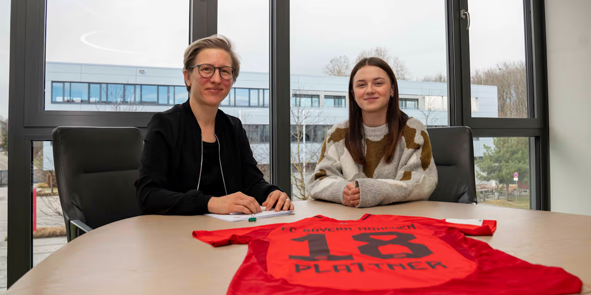

Maria Plattner ist zurück in Deutschland. Die österreichische Mittelfeldspielerin unterschreibt einen ab sofort geltenden Vertrag beim FC Bayern II.
Zweitliga-Schlusslicht Bayern II hat sich in der Winterpause im Mittelfeld verstärkt. Mit Maria Plattner wechselt eine zehnfache österreichische Nationalspielerin an die Isar. Bereits von 2020 bis 2023 spielte die 23-jährige in Deutschland. Bei Turbine Potsdam konnte sie in dieser Zeit in 32 Bundesligaspielen Erfahrung sammeln und bereitete sechs Tore vor, während sie eins selbst erzielte. Nach dem dreijährigen Aufenthalt kehrte sie zurück in ihre Heimat und startete nach der Saison 2018/2019 ein weiteres Mal für den FC Wacker Innsbruck.
Nicht nur aufgrund der langen Geschichte des “extrem großen Vereins” sieht Plattner in ihrem Wechsel eine Chance. Auch “Aufgrund der Nähe zu meiner Heimatstadt Innsbruck und der Möglichkeit, mich fußballerisch weiterzuentwickeln” entschied sie sich für diesen Schritt.
“Sie bringt unheimlich viel Erfahrung unter anderem aus der Frauen-Bundesliga mit und genau damit soll sie unsere zweite Mannschaft unterstützen. Sie hat ihre Stärken im Mittelfeld und wird uns dabei helfen, noch mehr Torgefahr auszustrahlen, aber auch die Defensive zu stabilisieren”, erklärt Nathalie Bischof, Koordinatorin Talentförderung FC Bayern Frauenfußball, die Verpflichtung der Spielerin, die in München “schon lange auf dem Schirm” war.